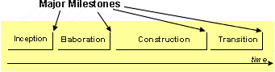
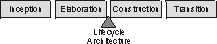
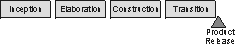
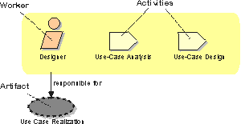
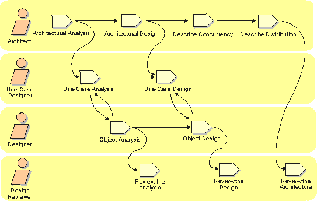
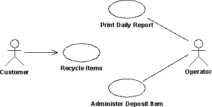
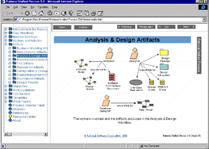

|
Rational Unified Process: Best Practices for Software Development Teams Table of Contents What Is the Rational Unified Process? Effective Deployment of 6 Best Practices Process Overview Two Dimensions Phases and Iterations--The Time Dimension Inception Phase Elaboration Phase Construction Phase Transition Phase Iterations Static Structure of the Process Activities, Artifacts, and Workers Workflows Core Workflows Business Modeling Requirements Analysis and Design Implementation Test Deployment Project Management Configuration and Change Management Environment Rational Unified Process--The Product Integration with Tools A Brief History of the Rational Unified Process
Abstract This paper presents an overview of the Rational Unified Process.? The Rational Unified Process is a software engineering process, delivered through a web-enabled, searchable knowledge base. The process enhances team productivity and delivers software best practices via guidelines, templates and tool mentors for all critical software lifecycle activities. The knowledge base allows development teams to gain the full benefits of the industry-standard Unified Modeling Language (UML).
The Rational Unified Process is a Software Engineering Process. It provides a disciplined approach to assigning tasks and responsibilities within a development organization. Its goal is to ensure the production of high-quality software that meets the needs of its end-users, within a predictable schedule and budget. [11, 13] The Rational Unified Process is a process product, developed and maintained by Rational? Software. The development team for the Rational Unified Process are working closely with customers, partners, Rational's product groups as well as Rational's consultant organization, to ensure that the process is continuously updated and improved upon to reflect recent experiences and evolving and proven best practices. The Rational Unified Process enhances team productivity, by providing every team member with easy access to a knowledge base with guidelines, templates and tool mentors for all critical development activities. By having all team members accessing the same knowledge base, no matter if you work with requirements, design, test, project management, or configuration management, we ensure that all team members share a common language, process and view of how to develop software. The Rational Unified Process activities create and maintain models. Rather than focusing on the production of large amount of paper documents, the Unified Process emphasizes the development and maintenance of models--semantically rich representations of the software system under development. [3, 7, 8] The Rational Unified Process is a guide for how to effectively use the Unified Modeling Language (UML). The UML is a industry-standard language that allows us to clearly communicate requirements, architectures and designs. The UML was originally created by Rational Software, and is now maintained by the standards organization Object Management Group (OMG). [4] The Rational Unified Process is supported by tools, which automate large parts of the process. They are used to create and maintain the various artifacts-models in particular-of the software engineering process: visual modeling, programming, testing, etc. They are invaluable in supporting all the bookkeeping associated with the change management as well as the configuration management that accompanies each iteration. The Rational Unified Process is a configurable process. No single process is suitable for all software development. The Unified Process fits small development teams as well as large development organizations. The Unified Process is founded on a simple and clear process architecture that provides commonality across a family of processes. Yet, it can be varied to accommodate different situations. It contains a Development Kit, providing support for configuring the process to suit the needs of a given organization. The Rational Unified Process captures many of the best practices in modern software development in a form that is suitable for a wide range of projects and organizations. Deploying these best practices�using the Rational Unified Process as your guide�offers development teams a number of key advantages. In next section, we describe the six fundamental best practices of the Rational Unified Process.
The Rational Unified Process describes how to effectively deploy commercially proven approaches to software development for software development teams. These are called "best practices" not so much because you can precisely quantify their value, but rather, because they are observed to be commonly used in industry by successful organizations. The Rational Unified Process provides each team member with the guidelines, templates and tool mentors necessary for the entire team to take full advantage of among others the following best practices:
Develop Software Iteratively--Given today's sophisticated software systems, it is not possible to sequentially first define the entire problem, design the entire solution, build the software and then test the product at the end. An iterative approach is required that allows an increasing understanding of the problem through successive refinements, and to incrementally grow an effective solution over multiple iterations. The Rational Unified Process supports an iterative approach to development that addresses the highest risk items at every stage in the lifecycle, significantly reducing a project's risk profile. This iterative approach helps you attack risk through demonstrable progress�frequent, executable releases that enable continuous end user involvement and feedback. Because each iteration ends with an executable release, the development team stays focused on producing results, and frequent status checks help ensure that the project stays on schedule. An iterative approach also makes it easier to accommodate tactical changes in requirements, features or schedule. [1, 2, 10] Manage Requirements--The Rational Unified Process describes how to elicit, organize, and document required functionality and constraints; track and document tradeoffs and decisions; and easily capture and communicate business requirements. The notions of use case and scenarios proscribed in the process has proven to be an excellent way to capture functional requirements and to ensure that these drive the design, implementation and testing of software, making it more likely that the final system fulfills the end user needs. They provide coherent and traceable threads through both the development and the delivered system. [7] Use Component-Based Architectures--The process focuses on early development and baselining of a robust executable architecture, prior to committing resources for full-scale development. It describes how to design a resilient architecture that is flexible, accommodates change, is intuitively understandable, and promotes more effective software reuse. The Rational Unified Process supports component-based software development. Components are non-trivial modules, subsystems that fulfill a clear function. The Rational Unified Process provides a systematic approach to defining an architecture using new and existing components. These are assembled in a well-defined architecture, either ad hoc, or in a component infrastructure such as the Internet, CORBA, and COM, for which an industry of reusable components is emerging. [5] Visually Model Software--The process shows you how to visually model software to capture the structure and behavior of architectures and components. This allows you to hide the details and write code using "graphical building blocks." Visual abstractions help you communicate different aspects of your software; see how the elements of the system fit together; make sure that the building blocks are consistent with your code; maintain consistency between a design and its implementation; and promote unambiguous communication. The industry-standard Unified Modeling Language (UML), created by Rational Software, is the foundation for successful visual modeling. [4, 12] Verify Software Quality--Poor application performance and poor reliability are common factors which dramatically inhibit the acceptability of today's software applications. Hence, quality should be reviewed with respect to the requirements based on reliability, functionality, application performance and system performance. The Rational Unified Process assists you in the planning, design, implementation, execution, and evaluation of these test types. Quality assessment is built into the process, in all activities, involving all participants, using objective measurements and criteria, and not treated as an afterthought or a separate activity performed by a separate group. Control Changes to Software--The ability to manage change--making certain that each change is acceptable, and being able to track changes--is essential in an environment in which change is inevitable. The process describes how to control, track and monitor changes to enable successful iterative development. It also guides you in how to establish secure workspaces for each developer by providing isolation from changes made in other workspaces and by controlling changes of all software artifacts (e.g., models, code, documents, etc.). And it brings a team together to work as a single unit by describing how to automate integration and build management.
Two Dimensions The process can be described in two dimensions, or along two axis:
The Iterative Model graph shows how the process is structured along two dimensions.
This is the dynamic organization of the process along time. The software lifecycle is broken into cycles, each cycle working on a new generation of the product. The Rational Unified Process divides one development cycle in four consecutive phases. [10]
Each phase is concluded with a well-defined milestone--a point in time at which certain critical decisions must be made, and therefore key goals must have been achieved. [2]
 The phases and major milestones in the process.
Each phase has a specific purpose. Inception Phase
During the inception phase, you establish the business case for the system and delimit the project scope. To accomplish this you must identify all external entities with which the system will interact (actors) and define the nature of this interaction at a high-level. This involves identifying all use cases and describing a few significant ones. The business case includes success criteria, risk assessment, and estimate of the resources needed, and a phase plan showing dates of major milestones. [10, 14] The outcome of the inception phase is:
At the end of the inception phase is the first major project milestone: the Lifecycle Objectives Milestone. The evaluation criteria for the inception phase are: Stakeholder concurrence on scope definition and cost/schedule estimates. Requirements understanding as evidenced by the fidelity of the primary use cases. Credibility of the cost/schedule estimates, priorities, risks, and development process. Depth and breadth of any architectural prototype that was developed. Actual expenditures versus planned expenditures. The project may be cancelled or considerably re-thought if it fails to pass this milestone. Elaboration Phase
The purpose of the elaboration phase is to analyze the problem domain, establish a sound architectural foundation, develop the project plan, and eliminate the highest risk elements of the project. To accomplish these objectives, you must have the "mile wide and inch deep" view of the system. Architectural decisions have to be made with an understanding of the whole system: its scope, major functionality and nonfunctional requirements such as performance requirements. It is easy to argue that the elaboration phase is the most critical of the four phases. At the end of this phase, the hard "engineering" is considered complete and the project undergoes its most important day of reckoning: the decision on whether or not to commit to the construction and transition phases. For most projects, this also corresponds to the transition from a mobile, light and nimble, low-risk operation to a high-cost, high-risk operation with substantial inertia. While the process must always accommodate changes, the elaboration phase activities ensure that the architecture, requirements and plans are stable enough, and the risks are sufficiently mitigated, so you can predictably determine the cost and schedule for the completion of the development. Conceptually, this level of fidelity would correspond to the level necessary for an organization to commit to a fixed-price construction phase. In the elaboration phase, an executable architecture prototype is built in one or more iterations, depending on the scope, size, risk, and novelty of the project. This effort should at least address the critical use cases identified in the inception phase, which typically expose the major technical risks of the project. While an evolutionary prototype of a production-quality component is always the goal, this does not exclude the development of one or more exploratory, throw-away prototypes to mitigate specific risks such as design/requirements trade-offs, component feasibility study, or demonstrations to investors, customers, and end-users. The outcome of the elaboration phase is:
Milestone: Lifecycle Architecture  At the end of the elaboration phase is the second important project milestone, the Lifecycle Architecture Milestone. At this point, you examine the detailed system objectives and scope, the choice of architecture, and the resolution of the major risks. The main evaluation criteria for the elaboration phase involves the answers to these questions:
The project may be aborted or considerably re-thought if it fails to pass this milestone. Construction Phase
During the construction phase, all remaining components and application features are developed and integrated into the product, and all features are thoroughly tested. The construction phase is, in one sense, a manufacturing process where emphasis is placed on managing resources and controlling operations to optimize costs, schedules, and quality. In this sense, the management mindset undergoes a transition from the development of intellectual property during inception and elaboration, to the development of deployable products during construction and transition. Many projects are large enough that parallel construction increments can be spawned. These parallel activities can significantly accelerate the availability of deployable releases; they can also increase the complexity of resource management and workflow synchronization. A robust architecture and an understandable plan are highly correlated. In other words, one of the critical qualities of the architecture is its ease of construction. This is one reason why the balanced development of the architecture and the plan is stressed during the elaboration phase. The outcome of the construction phase is a product ready to put in hands of its end-users. At minimum, it consists of:
At the end of the construction phase is the third major project milestone :Initial Operational Capability Milestone. At this point, you decide if the software, the sites, and the users are ready to go operational, without exposing the project to high risks. This release is often called a "beta" release. The evaluation criteria for the construction phase involve answering these questions:
Transition may have to be postponed by one release if the project fails to reach this milestone. Transition Phase
The purpose of the transition phase is to transition the software product to the user community. Once the product has been given to the end user, issues usually arise that require you to develop new releases, correct some problems, or finish the features that were postponed. The transition phase is entered when a baseline is mature enough to be deployed in the end-user domain. This typically requires that some usable subset of the system has been completed to an acceptable level of quality and that user documentation is available so that the transition to the user will provide positive results for all parties. This includes:
The transition phase focuses on the activities required to place the software into the hands of the users. Typically, this phase includes several iterations, including beta releases, general availability releases, as well as bug-fix and enhancement releases. Considerable effort is expended in developing user-oriented documentation, training users, supporting users in their initial product use, and reacting to user feedback. At this point in the lifecycle, however, user feedback should be confined primarily to product tuning, configuring, installation, and usability issues. The primary objectives of the transition phase include:
This phase can range from being very simple to extremely complex, depending on the type of product. For example, a new release of an existing desktop product may be very simple, whereas replacing a nation's air-traffic control system would be very complex.  Milestone: Product Release
At the end of the transition phase is the fourth important project milestone, the Product Release Milestone. At this point, you decide if the objectives were met, and if you should start another development cycle. In some cases, this milestone may coincide with the end of the inception phase for the next cycle. The primary evaluation criteria for the transition phase involve the answers to these questions:
Iterations Each phase in the Rational Unified Process can be further broken down into iterations. An iteration is a complete development loop resulting in a release (internal or external) of an executable product, a subset of the final product under development, which grows incrementally from iteration to iteration to become the final system. [10] Benefits of an Iterative Approach Compared to the traditional waterfall process, the iterative process has the following advantages:
A process describes who is doing what, how, and when. The Rational Unified Process is represented using four primary modeling elements:
Activities, Artifacts, and Workers  Workers, activities, and artifacts.
Worker A worker defines the behavior and responsibilities of an individual, or a group of individuals working together as a team. You could regard a worker as a "hat" an individual can wear in the project. One individual may wear many different hats. This is an important distinction because it is natural to think of a worker as the individual or team itself, but in the Unified Process the worker is more the role defining how the individuals should carry out the work. The responsibilities we assign to a worker includes both to perform a certain set of activities as well as being owner of a set of artifacts.
People and workers.
Activity An activity of a specific worker is a unit of work that an individual in that role may be asked to perform. The activity has a clear purpose, usually expressed in terms of creating or updating some artifacts, such as a model, a class, a plan. Every activity is assigned to a specific worker. The granularity of an activity is generally a few hours to a few days, it usually involves one worker, and affects one or only a small number of artifacts. An activity should be usable as an element of planning and progress; if it is too small, it will be neglected, and if it is too large, progress would have to be expressed in terms of an activity's parts. Example of activities:
Artifact An artifact is a piece of information that is produced, modified, or used by a process. Artifacts are the tangible products of the project, the things the project produces or uses while working towards the final product. Artifacts are used as input by workers to perform an activity, and are the result or output of such activities. In object-oriented design terms, as activities are operations on an active object (the worker), artifacts are the parameters of these activities. Artifacts may take various shapes or forms:
 Workflows
Example of workflow.
A mere enumeration of all workers, activities and artifacts does not quite constitute a process. We need a way to describe meaningful sequences of activities that produce some valuable result, and to show interactions between workers. A workflow is a sequence of activities that produces a result of observable value. In UML terms, a workflow can be expressed as a sequence diagram, a collaboration diagram, or an activity diagram. We use a form of activity diagrams in this white paper.
Note that it is not always possible or practical to represent all of the dependencies between activities. Often two activities are more tightly interwoven than shown, especially when they involve the same worker or the same individual. People are not machines, and the workflow cannot be interpreted literally as a program for people, to be followed exactly and mechanically. In next section we will discuss the most essential type of workflows in the process, called Core Workflows.
There are nine core process workflows in the Rational Unified Process, which represent a partitioning of all workers and activities into logical groupings.
The nine core process workflows.
The core process workflows are divided into six core "engineering" workflows:
And three core "supporting" workflows:
Although the names of the six core engineering workflows may evoke the sequential phases in a traditional waterfall process, we should keep in mind that the phases of an iterative process are different and that these workflows are revisited again and again throughout the lifecycle. The actual complete workflow of a project interleaves these nine core workflows, and repeats them with various emphasis and intensity at each iteration. Business Modeling One of the major problems with most business engineering efforts, is that the software engineering and the business engineering community do not communicate properly with each other. This leads to that the output from business engineering is not used properly as input to the software development effort, and vice-versa. The Rational Unified Process addresses this by providing a common language and process for both communities, as well as showing how to create and maintain direct traceability between business and software models. In Business Modeling we document business processes using so called business use cases. This assures a common understanding among all stakeholders of what business process needs to be supported in the organization. The business use cases are analyzed to understand how the business should support the business processes. This is documented in a business object-model. Many projects may choose not to do business modeling. Requirements The goal of the Requirements workflow is to describe what the system should do and allows the developers and the customer to agree on that description. To achieve this, we elicit, organize, and document required functionality and constraints; track and document tradeoffs and decisions. A Vision document is created, and stakeholder needs are elicited. Actors are identified, representing the users, and any other system that may interact with the system being developed. Use cases are identified, representing the behavior of the system. Because use cases are developed according to the actor's needs, the system is more likely to be relevant to the users. The following figure shows an example of a use-case model for a recycling-machine system.  An example of a use-case model with actors and use cases.
Each use case is described in detail. The use-case description shows how the system interacts step by step with the actors and what the system does. Non-functional requirements are described in Supplementary Specifications. The use cases function as a unifying thread throughout the system's development cycle. The same use-case model is used during requirements capture, analysis & design, and test. Analysis and Design The goal of the Analysis and Design workflow is to show how the system will be realized in the implementation phase. You want to build a system that:
Analysis and Design results in a design model and optionally an analysis model. The design model serves as an abstraction of the source code; that is, the design model acts as a 'blueprint' of how the source code is structured and written. The design model consists of design classes structured into design packages and design subsystems with well-defined interfaces, representing what will become components in the implementation. It also contains descriptions of how objects of these design classes collaborate to perform use cases. The next figure shows part of a sample design model for the recycling-machine system in the use-case model shown in the previous figure.
Part of a design model with communicating design classes and package group design classes.
The design activities are centered around the notion of architecture. The production and validation of this architecture is the main focus of early design iterations. Architecture is represented by a number of architectural views [9]. These views capture the major structural design decisions. In essence, architectural views are abstractions or simplifications of the entire design, in which important characteristics are made more visible by leaving details aside. The architecture is an important vehicle not only for developing a good design model, but also for increasing the quality of any model built during system development. Implementation The purpose of implementation are:
The system is realized through implementation of components. The Rational Unified Process describes how you reuse existing components, or implement new components with well defined responsibility, making the system easier to maintain, and increasing the possibilities to reuse. Components are structured into Implementation Subsystems. Subsystems take the form of directories, with additional structural or management information. For example, a subsystem can be created as a directory or a folder in a file system, or a subsystem in Rational/Apex for C++ or Ada, or packages using Java. Test The purposes of testing are:
The Rational Unified Process proposes an iterative approach, which means that you test throughout the project. This allows you to find defects as early as possible, which radically reduces the cost of fixing the defect. Test are carried out along three quality dimensions reliability, functionality, application performance and system performance. For each of these quality dimensions, the process describes how you go through the test lifecycle of planning, design, implementation, execution and evaluation. Strategies for when and how to automate test are described. Test automation is especially important using an iterative approach, to allow regression testing at then end of each iteration, as well as for each new version of the product. Deployment The purpose of the deployment workflow is to successfully produce product releases, and deliver the software to its end users. It covers a wide range of activities including:
In many cases, this also includes activities such as:
Although deployment activities are mostly centered around the transition phase, many of the activities need to be included in earlier phases to prepare for deployment at the end of the construction phase. The Deployment and Environment workflows of the Rational Unified Process contain less detail than other workflows.
Project Management Software Project Management is the art of balancing competing objectives, managing risk, and overcoming constraints to deliver, successfully, a product which meets the needs of both customers (the payers of bills) and the users. The fact that so few projects are unarguably successful is comment enough on the difficulty of the task. This workflow focuses mainly on the specific aspect of an iterative development process. Our goal with this section is to make the task easier by providing:
It is not a recipe for success, but it presents an approach to managing the project that will markedly improve the odds of delivering successful software. [14] Configuration and Change Management In this workflow we describe how to control the numerous artifacts produced by the many people who work on a common project. Control helps avoid costly confusion, and ensures that resultant artifacts are not in conflict due to some of the following kinds of problems:
This workflow provides guidelines for managing multiple variants of evolving software systems, tracking which versions are used in given software builds, performing builds of individual programs or entire releases according to user-defined version specifications, and enforcing site-specific development policies. We describe how you can manage parallel development, development done at multiple sites, and how to automate the build process. This is especially important in an iterative process where you may want to be able to do builds as often as daily, something that would become impossible without powerful automation. We also describe how you can keep an audit trail on why, when and by whom any artifact was changed. This workflow also covers change request management, i.e. how to report defects, manage them through their lifecycle, and how to use defect data to track progress and trends. Environment The purpose of the environment workflow is to provide the software development organization with the software development environment--both processes and tools--that are needed to support the development team. This workflow focuses on the activities to configure the process in the context of a project. It also focus on activities to develop the guidelines needed to support a project. A step-by-step procedure is provided describing how you implement a process in an organization. The environment workflow also contains a Development Kit providing you with the guidelines, templates and tools necessary to customize the process. The Development Kit is described in more detail in the section " Development Kit for Process Customization" found later in this paper. Certain aspects of the Environment workflow are not covered in the process such as selecting, acquiring, and making the tools work, and maintaining the development environment.
The Rational Unified Process product consists of:
Navigating the Knowledge Base The Rational Unified Process knowledge allows you to access the content with any of the popular web browsers, such as Microsoft?Internet Explorer and Netscape Navigator. With the Rational Unified Process, you're never more than a few mouse clicks away from the information you want. The knowledge base contains a lot of hypertext links, and overviews of the various process elements are presented through interactive images, making it easy to find relevant information in an intuitive fashion. The powerful search engine, the index, and the 'explorer looking' tree browser make it easy to use the process. Navigational buttons allow you to move to the next or previous page as if reading a book. Information is presented in many different views, allowing you to look at information relevant to your role, to a specific activity, or to a workflow. Guided tours for easy learning of the process are provided for key project roles.  View enlarged chart
Interactive images and navigational buttons make it easy to find the specific information you are looking for.
Development Kit for Process Customization The Rational Unified Process is general and complete enough to be used "as is" by some software development organizations. However in many circumstances, this software engineering process will need to be modified, adjusted, and tailored to accommodate the specific characteristics, constraints, and history of the adopting organization. In particular a process should not be followed blindly, generating useless work, producing artifacts that are of little added value. It must be made as lean as possible and still be able to fulfill its mission to produce rapidly and predictably high quality software. The process contains a Development Kit, which contains guidelines for how you can customize the process to fit the specific needs of the adopting organization or project. Templates are also included for process authoring, as well as tools for generation or manipulation of search engine, index, site map, tree browser, etc. The Development Kit enables the customizing organization to maintain the look and feel of the Rational Unified Process. The more the process is customized, the more difficult will it be to move over customizations to future releases of the process. The Development Kit describes strategies, tools and techniques to minimize the work associated with moving customizations to future releases.
A software-engineering process requires tools to support all activities in a system's lifecycle, especially to support the development, maintenance and bookkeeping of various artifacts-models in particular. An iterative development process puts special requirements on the tool set you use, such as better integration among tools and round-trip engineering between models and code. You also need tools to keep track of changes, to support requirements traceability, to automate documentation, as well as tools to automate tests to facilitate regression test. The Rational Unified Process can be used with a variety of tools, either from Rational or other vendors. However, Rational provides many well-integrated tools that efficiently support the Rational Unified Process. Below you find a list of some of Rational's tools that support the Rational Unified Process. The Rational Unified Process contains Tool Mentors for almost all of these products. A tool mentor is a step-by-step guide describing in detail how to operate a tool, (i.e. what menus to launch, what information to enter into dialog boxes, and how to navigate a tool) to carry out an activity within the process. The Tool Mentors allow us to link the tool-independent process to the actual manipulation of the tools in your daily work.
The Rational Unified Process has matured over many years and reflects the collective experience of the many people and companies that make up today Rational Software's rich heritage. Let us have a quick look at the process's ancestry, as illustrated in the figure below.
Genealogy of the Rational Unified Process
Going backwards in time, the Rational Unified Process is the direct successor to the Rational Objectory Process (version 4). The Rational Unified Process incorporates more material in the areas of data engineering, business modeling, project management, and configuration management, the latter as a result of the merger with Pure-Atria. It also brings a tighter integration to the Rational Software suite of tools. The Rational Objectory Process was the result of the integration of the "Rational Approach" and the Objectory Process (version 3), after the merger of Rational Software Corporation and Objectory AB in 1995. From its Objectory ancestry, the process has inherited its process structure and the central concept of use case. From its Rational background, it gained the current formulation of iterative development and architecture. This version also incorporated material on requirements management from Requisite, Inc. and a detailed test process inherited from SQA?, Inc., companies which also merged with Rational Software. Finally, this process was the first one to use the newly created Unified Modeling Language (UML 0.8). The Objectory process was created in Sweden in 1987 by Ivar Jacobson as the result of his experience with Ericsson. This process became a product at his company, Objectory AB. Centered around the concept of use case and an object-oriented design method, it rapidly gained recognition in the software industry and has been adopted and integrated by many companies worldwide. A simplified version of the Objectory process was published as a text book in 1992. The Rational Unified Process is a specific and detailed instance of a more generic process described by Ivar Jacobson, Grady Booch, and James Rumbaugh in the textbook, The Unified Software Development Process.
References Barry W. Boehm, A Spiral Model of Software Development and Enhancement, Computer, May 1988, IEEE, pp.61-72 Barry W. Boehm, Anchoring the Software Process, IEEE Software, 13, 4, July 1996, pp. 73-82. Grady Booch, Object Solutions, Addison-Wesley, 1995. Grady Booch, Ivar Jacobson, and James Rumbaugh, Unified Modeling Language 1.3, White paper, Rational Software Corp., 1998. Alan W. Brown (ed.), Component-Based Software Engineering, IEEE Computer Society, Los Alamitos, CA, 1996, pp.140. Michael T. Devlin, and Walker E. Royce, Improving Software Economics in the Aerospace and Defense Industry, Technical paper TP-46, Santa Clara, CA, Rational Software Corp., 1995 Ivar Jacobson, Magnus Christerson, Patrik Jonsson, and Gunnar �vergaard, Object-Oriented Software Engineering-A Use Case Driven Approach, Wokingham, England, Addison-Wesley, 1992, 582p. Ivar Jacobson, M. Griss, and P. Jonsson, Software Reuse-Architecture, Process and Organization for Business Success, Harlow, England, AWL, 1997. Philippe Kruchten, The 4+1 View Model of Architecture, IEEE Software, 12 (6), November 1995, IEEE, pp.42-50. Philippe Kruchten, A Rational Development Process, CrossTalk, 9 (7), STSC, Hill AFB, UT, pp.11-16. Ivar Jacobson, Grady Booch, and Jim Rumbaugh, Unified Software Development Process, Addison-Wesley, 1999. Grady Booch, Jim Rumbaugh, and Ivar Jacobson, Unified Modeling Language-User's Guide, Addison-Wesley, 1999. Philippe Kruchten, Rational Unified Process-An Introduction, Addison-Wesley, 1999. Walker Royce, Software Project Management-A Unified Framework, Addison-Wesley, 1998. |